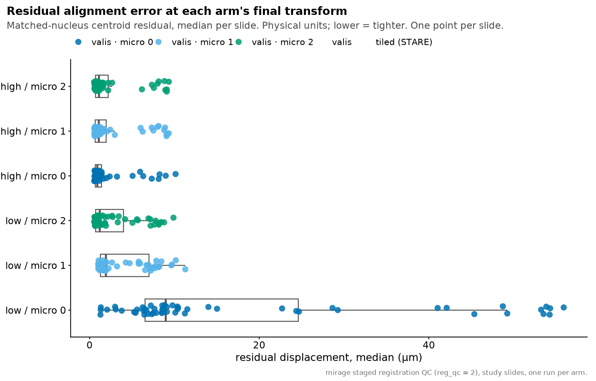
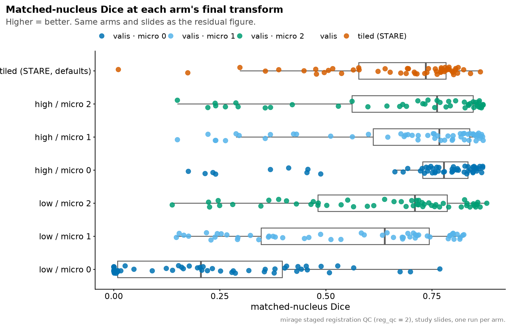
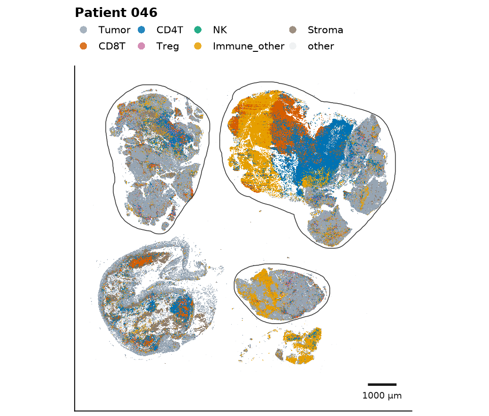
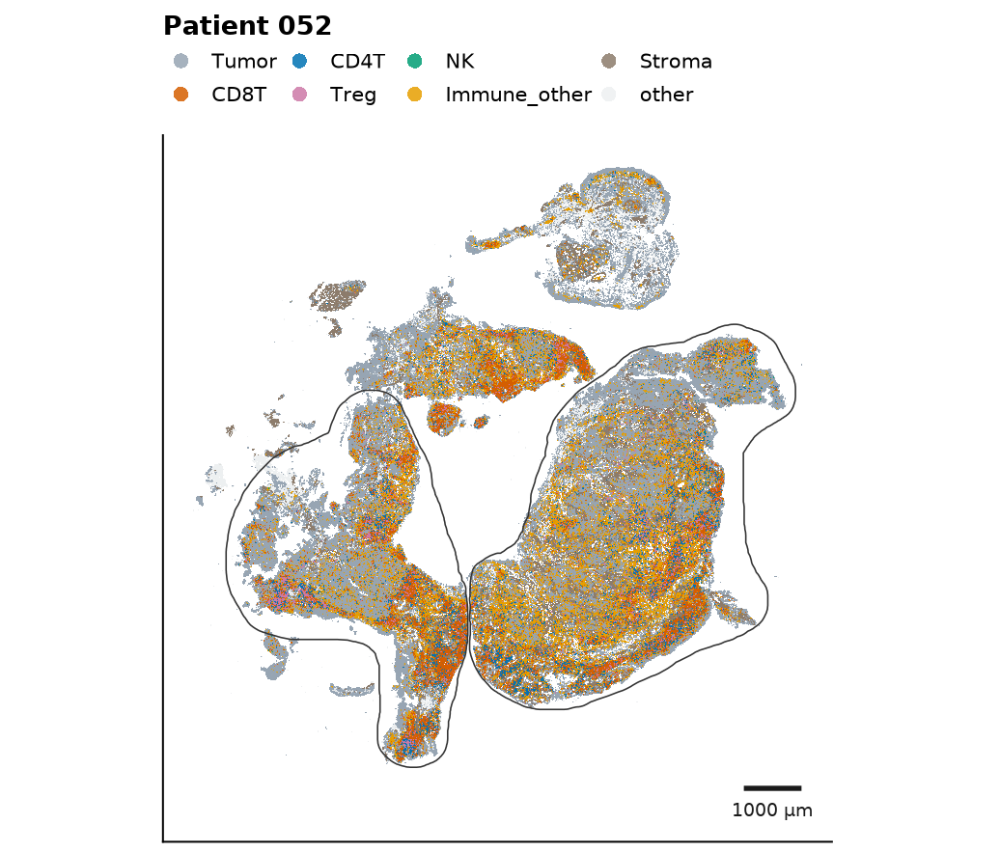
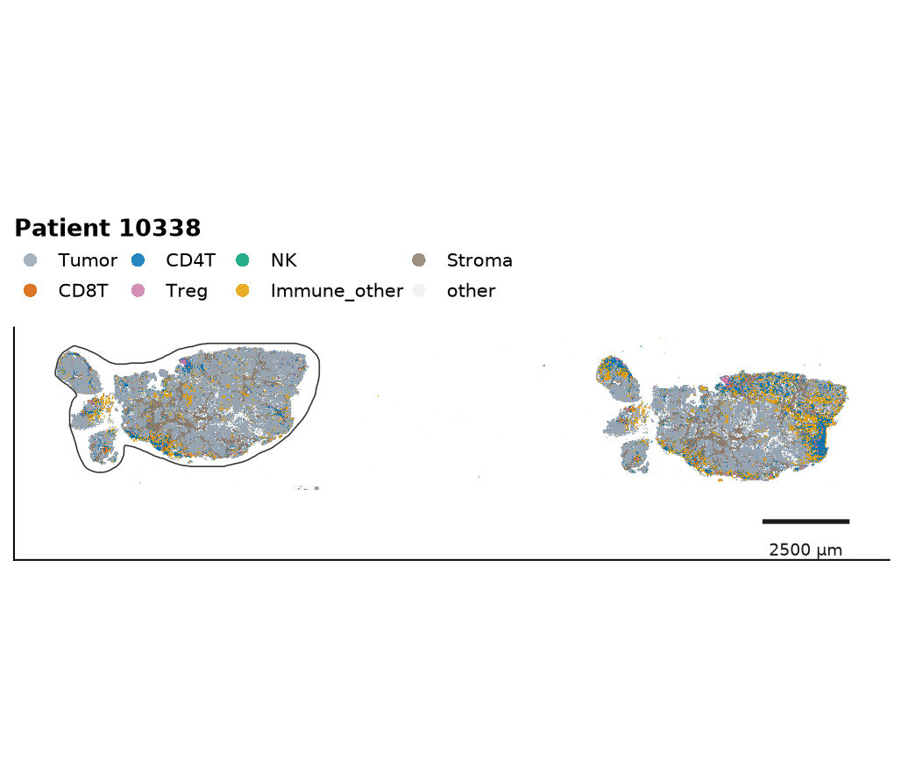
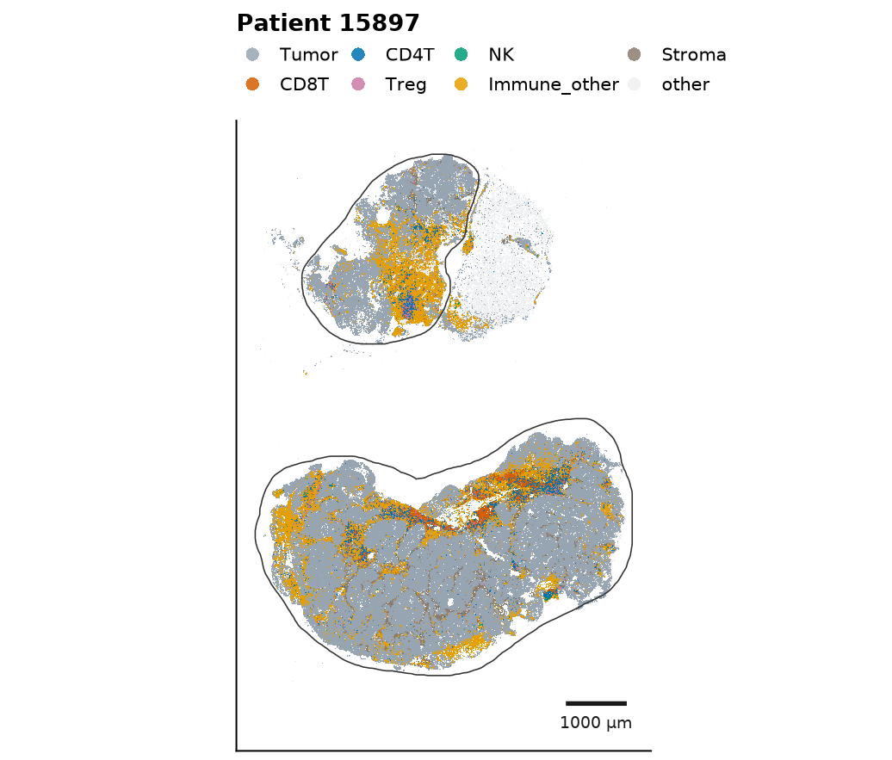
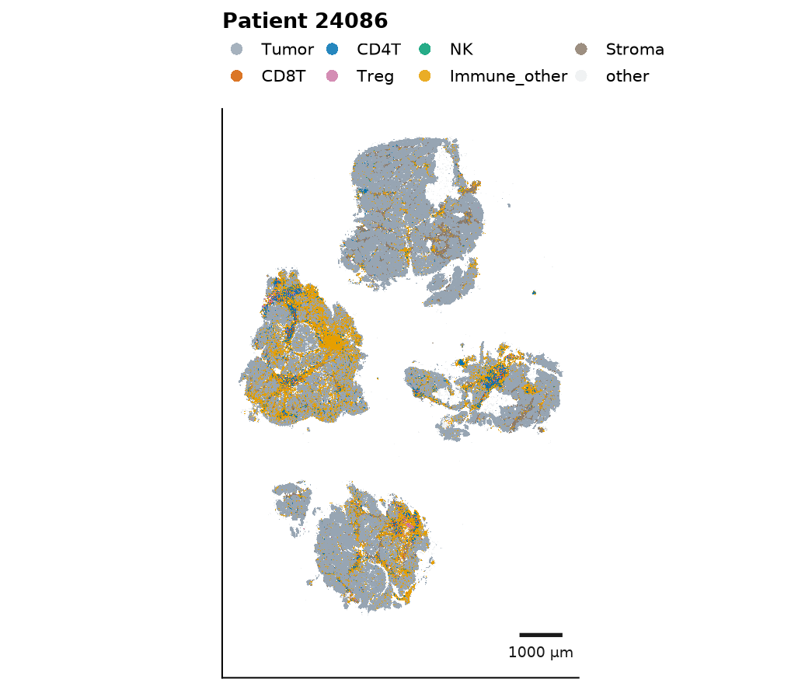
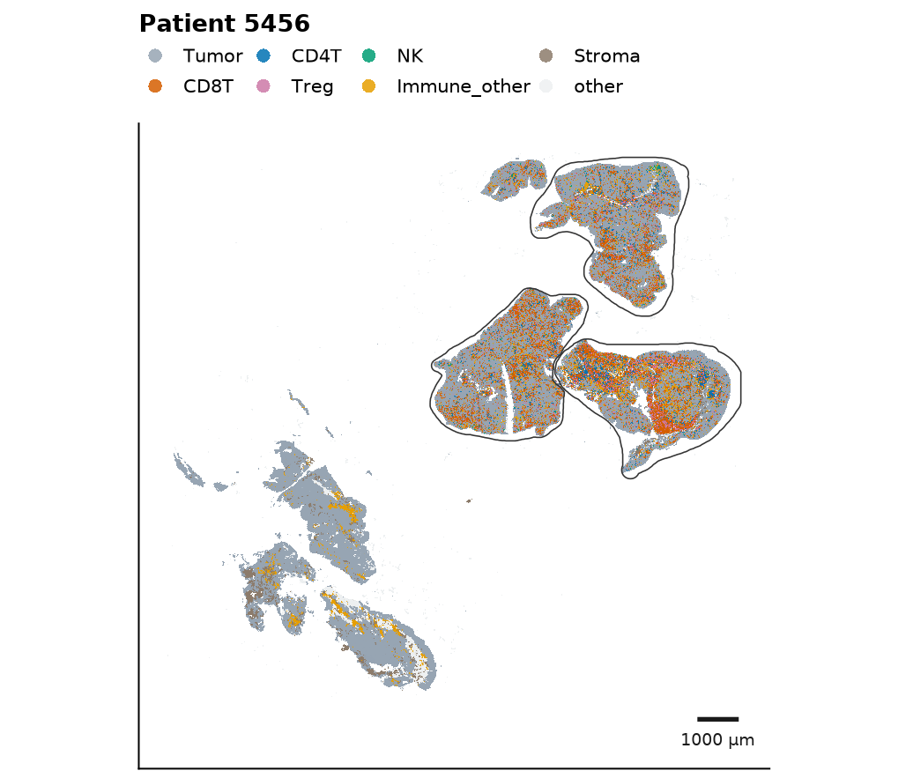
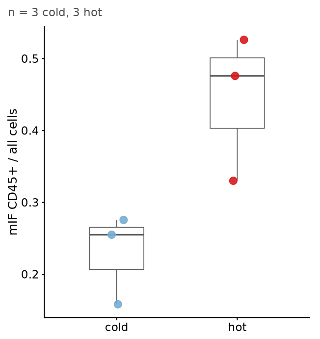
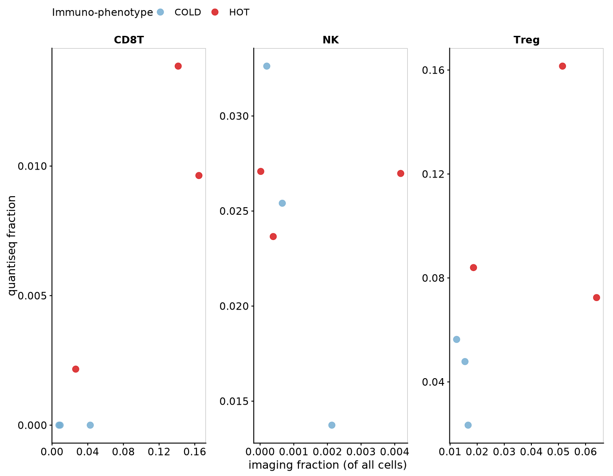

Last updated: 2026-08-12
Checks: 7 0
Knit directory: ihc_method/
This reproducible R Markdown analysis was created with workflowr (version 1.7.2). The Checks tab describes the reproducibility checks that were applied when the results were created. The Past versions tab lists the development history.
Great! Since the R Markdown file has been committed to the Git repository, you know the exact version of the code that produced these results.
Great job! The global environment was empty. Objects defined in the global environment can affect the analysis in your R Markdown file in unknown ways. For reproduciblity it’s best to always run the code in an empty environment.
The command set.seed(20260630) was run prior to running
the code in the R Markdown file. Setting a seed ensures that any results
that rely on randomness, e.g. subsampling or permutations, are
reproducible.
Great job! Recording the operating system, R version, and package versions is critical for reproducibility.
Nice! There were no cached chunks for this analysis, so you can be confident that you successfully produced the results during this run.
Great job! Using relative paths to the files within your workflowr project makes it easier to run your code on other machines.
Great! You are using Git for version control. Tracking code development and connecting the code version to the results is critical for reproducibility.
The results in this page were generated with repository version 9b19461. See the Past versions tab to see a history of the changes made to the R Markdown and HTML files.
Note that you need to be careful to ensure that all relevant files for
the analysis have been committed to Git prior to generating the results
(you can use wflow_publish or
wflow_git_commit). workflowr only checks the R Markdown
file, but you know if there are other scripts or data files that it
depends on. Below is the status of the Git repository when the results
were generated:
Ignored files:
Ignored: .RData
Ignored: .Rhistory
Ignored: .Rproj.user/
Ignored: data/
Ignored: output/figures/
Ignored: renv/library/
Ignored: renv/staging/
Untracked files:
Untracked: output/paired_deconv.rds
Unstaged changes:
Modified: .gitignore
Note that any generated files, e.g. HTML, png, CSS, etc., are not included in this status report because it is ok for generated content to have uncommitted changes.
These are the previous versions of the repository in which changes were
made to the R Markdown (analysis/paper_figures.Rmd) and
HTML (docs/paper_figures.html) files. If you’ve configured
a remote Git repository (see ?wflow_git_remote), click on
the hyperlinks in the table below to view the files as they were in that
past version.
| File | Version | Author | Date | Message |
|---|---|---|---|---|
| Rmd | 1aa35a2 | bolt3x | 2026-08-12 | :art: separate the lineage colours, colour 5(c) hot/cold, drop three blocks |
| Rmd | 1f3d09d | bolt3x | 2026-08-12 | :recycle: drop the mirage arm, fix the fig.path warning, retune the margin bands |
| Rmd | 360ee92 | bolt3x | 2026-08-12 | :recycle: reorganise the workflowr site into four ordered parts |
| Rmd | df4d0da | bolt3x | 2026-08-11 | :sparkles: add a paper-figures assembly sheet for the manuscript panels |
This page is not an analysis. It is the sheet the
manuscript figures are cut from: one panel per plot, at publication
proportions, exported as vector PDFs to
output/figures/paper_figures/ so they can be placed and
labelled by hand in Affinity. No panel here computes anything a analysis
page does not already compute — each is a re-cut of an existing quantity
in the shape its legend asks for. Where a panel cannot be
computed (a screenshot, a microscope crop, a schematic) the page says
so, says exactly how to make it, and picks it up automatically once you
drop the file in.
Two kinds of panel.
output/figures/manual/<panel-id>.png (or
.pdf) and re-knit; it appears inline below its
instructions, and the instructions disappear.| patient_id | annotation | n_cells | has_annotation | membership |
|---|---|---|---|---|
| 046 | ANNOTATION_1 | 405697 | TRUE | sf |
| 046 | ANNOTATION_2 | 405697 | TRUE | sf |
| 046 | ANNOTATION_3 | 405697 | TRUE | sf |
| 052 | ANNOTATION_1 | 378194 | TRUE | sf |
| 052 | ANNOTATION_2 | 378194 | TRUE | sf |
| 10338 | ANNOTATION_1 | 235328 | TRUE | sf |
| 15897 | ANNOTATION_1 | 202652 | TRUE | sf |
| 15897 | ANNOTATION_2 | 202652 | TRUE | sf |
| 24086 | whole_slide | 283631 | FALSE | whole_slide |
| 5456 | ANNOTATION_1 | 382799 | TRUE | sf |
| 5456 | ANNOTATION_2 | 382799 | TRUE | sf |
| 5456 | ANNOTATION_3 | 382799 | TRUE | sf |
Already drawn, and better than a redraw.
mirage/docs/figures/pipeline-schematic.html is
Supplementary Figure S1: publication-shaped, self-contained, with every
module’s defaults as chips. Export it to PDF from a browser at A4 width
and place it directly.
Two things in the drafted legend contradict that schematic and need fixing in the text, not the figure:
ParamUtils.STEPS and Layout.CHECKPOINT_STEPS
both define
preprocessing → registration → segmentation → postprocessing.
Quantification and GeoJSON export are both inside
postprocessing.nuclear_markers = [DAPI, CELLTOX]. “DAPI throughout this
study” is the accurate phrasing.Panel fig2a_pipeline_schematic — MIRAGE
five-module / four-step pipeline graph
TO SUPPLY. Save as
output/figures/manual/fig2a_pipeline_schematic.png(or
- Open
mirage/docs/figures/pipeline-schematic.htmlin a browser.- Print to PDF, A4 landscape, background graphics ON, margins none.
- Crop to the panel you want — the sheet holds several; Fig 2(a) is the step ladder plus the module table.
Source:
mirage/docs/figures/pipeline-schematic.html(Supplementary Figure S1)
Panel fig2b_basic_seam — Tile-boundary crop,
before vs after BaSiC flatfield/darkfield correction
TO SUPPLY. Save as
output/figures/manual/fig2b_basic_seam.png(or
- Do not use the pipeline’s preprocess QC PNGs. They are written at
preprocess_qc_scale_factor = 0.25; a tile seam is a few-pixel intensity step and does not survive a quarter-scale downsample.- Take matched full-resolution crops at the SAME coordinates from the converted (pre-BaSiC) and preprocessed (post-BaSiC) OME-TIFFs.
- Centre the crop on a mosaicing seam — a visible grid line in the uncorrected image.
- Use one channel, one display range, identical for both crops. A different contrast stretch would manufacture the effect.
- Record the pixel size from the OME-TIFF metadata so the scale bar is real.
Source: imaging team — needs the raw and preprocessed images, not published QC output
Panel fig3a_interop_handoff — MIRAGE →
cells.geojson → FlowPath, the hand-off only
TO SUPPLY. Save as
output/figures/manual/fig3a_interop_handoff.png(or
- Three boxes, not a stage graph — Fig 2(a) is the stage graph and this panel must not repeat it.
- Show the artefact in the middle:
cells.geojson, geometry + per-cell features in one file.- Draw it in the S1/S2/S3 house style so the figure set reads as one artefact — copy the shared CSS block verbatim from any of
mirage/docs/figures/*.html(it is duplicated across all three on purpose).- A real excerpt of
qupath-extension-flowpath/cells.geojsonmakes a good inset.Source: new;
qupath-extension-flowpath/ARCHITECTURE.mdandmirage/docs/spatialdata.mddescribe the contract
Panel fig3b_gating_threshold — One user-drawn
gate on a threshold plot of MIRAGE per-cell features
TO SUPPLY. Save as
output/figures/manual/fig3b_gating_threshold.png(or
- QuPath ≥ 0.7.0, cells loaded, then
Extensions → FlowPath - GatingTree(Ctrl+G).- Add a root gate → threshold (1D). Pick a marker with clean separation — CD45 is the panel’s cleanest.
- Drag the threshold handle so it is visibly ON the histogram; the panel’s claim is that gating is interactive, so the handle must be in frame.
- Capture the histogram pane, not the whole application window.
- The catalog docs currently ship
assets/screenshots/placeholder.pngfor exactly this figure — nothing exists yet, this is yours to take.Source: screenshot — FlowPath GatingTree
Panel fig3c_phenotype_tree — The sequential
gating scheme and its terminal populations
TO SUPPLY. Save as
output/figures/manual/fig3c_phenotype_tree.png(or
- Draw from the ACTUAL
flowpath.jsonused for the study, not from memory.- Sequential, not Boolean: a CD45-only pan-immune root, then the T/NK axis.
- Shade the CD45+CD3−CD56− catch-all node — the coverage caveat in the legend depends on it being visually marked.
- Reconcile the terminal-population count against the table printed below before writing a number into the legend.
Source: the study’s
flowpath.json
The project’s own record of what the gate tree emits is below. It is the join table every analysis reads phenotypes through, so if the figure and this table disagree, the analyses are keyed to this one — fix the code or the figure, but do not leave them different.
| phenotype_clean | lineage |
|---|---|
| PANCK+Tumor | Tumor |
| VIM+Tumor | Tumor |
| T helper | CD4T |
| T cytotoxic | CD8T |
| Activated T cytotoxic | CD8T |
| CD8+ T reg | Treg |
| CD4+ Treg | Treg |
| Natural Killer | NK |
| Activated Natural Killer | NK |
| Immune | Immune_other |
| Stroma | Stroma |
| Unknown | Unknown |
| Myeloid | Immune_other |
| Unclassified | Unknown |
| Ambiguous | Unknown |
| Conflict | Unknown |
| Artefact | Unknown |
Panel fig4a_dapi_overlay — Two-colour DAPI
overlay of two separately-acquired panels, before vs after
registration
TO SUPPLY. Save as
output/figures/manual/fig4a_dapi_overlay.png(or
- The pipeline already makes this:
GENERATE_REGISTRATION_QCemits DAPI-overlay QC wheneverreg_qc >= 1, which is the default (reg_qc = 2).- But it writes at
qc_scale_factor = 0.25. For a ‘nuclei superimposed’ claim, take a full-resolution crop at matched coordinates from the pre- and post-registration images instead.- Two colours, one panel per channel, same display range before and after.
- Pick a field where the pre-registration drift is visible at figure size — a corner usually drifts more than the centre.
- Record the pixel size for the scale bar.
Source: mirage
GENERATE_REGISTRATION_QCoutput, or full-res crops from the same run
The arm-ranking panels. There are two possible sources, and they are not equivalent:
data/registration_arms/) — the study slides registered
once per configuration. This is what the figure should use.data/benchmark/param_matrix.csv) — mirage’s
benchmarks/ runs, whose moving panels are shifted copies of
channel 0. A residual measured there reflects a known injected offset,
not real cross-acquisition difficulty.This chunk prefers (1) and falls back to (2), and says which it used — because which one produced the figure changes what the figure is allowed to claim.


Source: the real arm sweep on the study slides — the
right source for the manuscript. Arms are ranked at each run’s FINAL
transform, because reg_micro_reg 0 and 1 emit no
micro stage and ranking on a fixed stage would drop those
arms. See registration arms for the
stage ladder, the pair-fraction trust check, and why the
rigid stage cannot be compared across depths.
Two legend corrections this sweep forces.
- The presets are not “two accuracy presets differing in feature-matching resolution, not in the feature matcher”.
memory_modeselects the matcher:low= BRISK/RANSAC,high= SuperPoint/SuperGlue. It is a different matcher.- Micro-registration is not on/off.
reg_micro_regis a nested depth (0none,1micro-rigid,2+ micro non-rigid), so a preset × depth sweep has six arms, not four.And there is no clean “rigid-only” baseline in a depth-crossed sweep. mirage’s
rigidQC stage means affine ∘ micro-rigid wheneverreg_micro_reg ≥ 1, so a rigid-only baseline exists only in the depth-0 arms. Thenativestage is the honest no-registration baseline.
paper_phenotype_map(), one panel per case. Exported one
PDF per case.






| patient_id | group |
|---|---|
| 10338 | cold |
| 5456 | hot |
| 052 | hot |
| 046 | hot |
| 15897 | cold |
| 24086 | cold |

No test is applied and no coefficient is printed — with three cases a
side the six points are the evidence, and
paper_immune_fraction_hotcold() deliberately never calls
paired_spearman(). Every other page on this site reports
rho freely; this panel is the one place that must not, because its
legend says so.

No fit line and no coefficient, for the reason above and one more:
the axes use different denominators (imaging counts cells, deconvolution
estimates a mixture fraction), so a regression line would invite exactly
the absolute-agreement reading the legend disclaims. The
populations plotted are fixed by deconv_to_lineage() and
there are four — CD4T, CD8T, Treg, NK. That answers the
legend’s
[author to supply: full list of populations plotted].
**Additional file 2** (per-arm TRE and Dice table) needs `data/benchmark/param_matrix.csv`.Additional files 1, 3, 4, 5 and 6.
mirage/docs/parameters.md is already the complete
per-module table. Missing from it: the compartment-to-marker map and a
default-versus-recommended comparison; both still have to be
written.cd45_over_inside (Tier 1), deconv_to_lineage()
(Tier 2) and Immune_other (Tier 3) — settle the naming
first.paper_lineage_table() in code/paper_figures.R
still generates the phenotype/cell-type-to-lineage mapping as data, and
is still tested, if it is ever wanted back.
Computed panels land in `output/figures/paper_figures/`. Hand-made panels go in `output/figures/manual/` named as the slots above.
R version 4.3.2 (2023-10-31)
Platform: x86_64-pc-linux-gnu (64-bit)
Running under: Rocky Linux 9.5 (Blue Onyx)
Matrix products: default
BLAS/LAPACK: FlexiBLAS OPENBLAS; LAPACK version 3.11.0
locale:
[1] LC_CTYPE=C.UTF-8 LC_NUMERIC=C LC_TIME=C.UTF-8
[4] LC_COLLATE=C.UTF-8 LC_MONETARY=C.UTF-8 LC_MESSAGES=C.UTF-8
[7] LC_PAPER=C.UTF-8 LC_NAME=C LC_ADDRESS=C
[10] LC_TELEPHONE=C LC_MEASUREMENT=C.UTF-8 LC_IDENTIFICATION=C
time zone: Europe/Rome
tzcode source: system (glibc)
attached base packages:
[1] stats graphics grDevices datasets utils methods base
other attached packages:
[1] jsonlite_2.0.0 fs_2.1.0 readxl_1.5.0 here_1.0.2
[5] lubridate_1.9.5 forcats_1.0.1 stringr_1.6.0 dplyr_1.2.1
[9] purrr_1.2.2 readr_2.2.0 tidyr_1.3.2 tibble_3.3.1
[13] ggplot2_4.0.3 tidyverse_2.0.0 workflowr_1.7.2
loaded via a namespace (and not attached):
[1] gtable_0.3.6 xfun_0.58 bslib_0.9.0 processx_3.9.0
[5] callr_3.7.6 tzdb_0.5.0 vctrs_0.7.3 tools_4.3.2
[9] ps_1.9.3 generics_0.1.4 parallel_4.3.2 proxy_0.4-29
[13] pkgconfig_2.0.3 KernSmooth_2.23-26 data.table_1.18.4 RColorBrewer_1.1-3
[17] S7_0.2.2 lifecycle_1.0.5 compiler_4.3.2 farver_2.1.2
[21] git2r_0.33.0 getPass_0.2-4 httpuv_1.6.12 htmltools_0.5.9
[25] class_7.3-23 sass_0.4.10 yaml_2.3.12 crayon_1.5.3
[29] later_1.4.8 pillar_1.11.1 jquerylib_0.1.4 whisker_0.4.1
[33] classInt_0.4-11 cachem_1.1.0 tidyselect_1.2.1 digest_0.6.39
[37] stringi_1.8.7 sf_1.1-1 labeling_0.4.3 rprojroot_2.1.1
[41] fastmap_1.2.0 grid_4.3.2 cli_3.6.6 magrittr_2.0.5
[45] e1071_1.7-17 withr_3.0.3 scales_1.4.0 promises_1.5.0
[49] bit64_4.8.2 timechange_0.4.0 rmarkdown_2.31 httr_1.4.7
[53] bit_4.6.0 otel_0.2.0 cellranger_1.1.0 hms_1.1.4
[57] evaluate_1.0.5 knitr_1.51 rlang_1.2.0 Rcpp_1.1.1-1.1
[61] glue_1.8.1 DBI_1.3.0 renv_1.2.3 vroom_1.7.1
[65] rstudioapi_0.15.0 R6_2.6.1 units_1.0-1